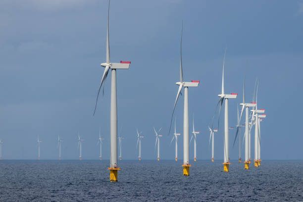
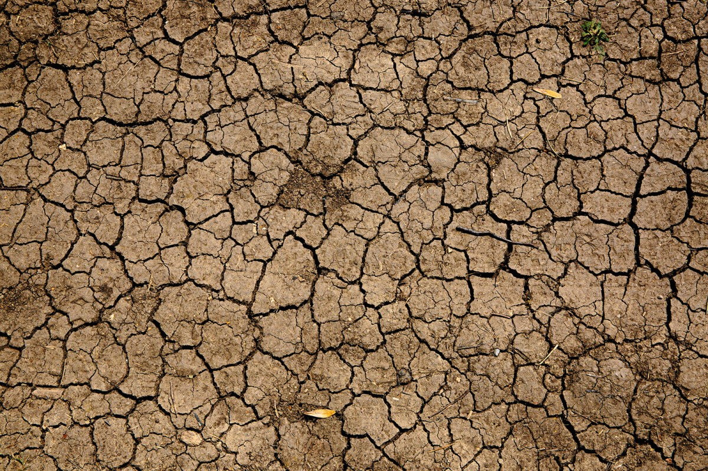

Bloc
Reflexions sobre ciència marina, clima i polítiques ambientals
L'empremta climàtica de la intel·ligència artificial
Arran de la irrupció massiva de la intel·ligència artificial, hem viscut una autèntica revolució. Avui, tot incorpora aquest segell... però és innegable que també deixa empremta en el clima.

Salvador Illa i el futur de les polítiques climàtiques a Catalunya
Tret de sortida al nou govern de Salvador Illa i, també, gir copernicà de les polítiques climàtiques i ambientals. O, almenys, això és el que sembla que acabarà passant.

La sequera com a mirall d'un país
No plou i no sembla que ho vulgui fer abundantment en els mesos vinents. La situació no és per llençar coets... però potser el causant de la sequera es troba a les nostres llars.